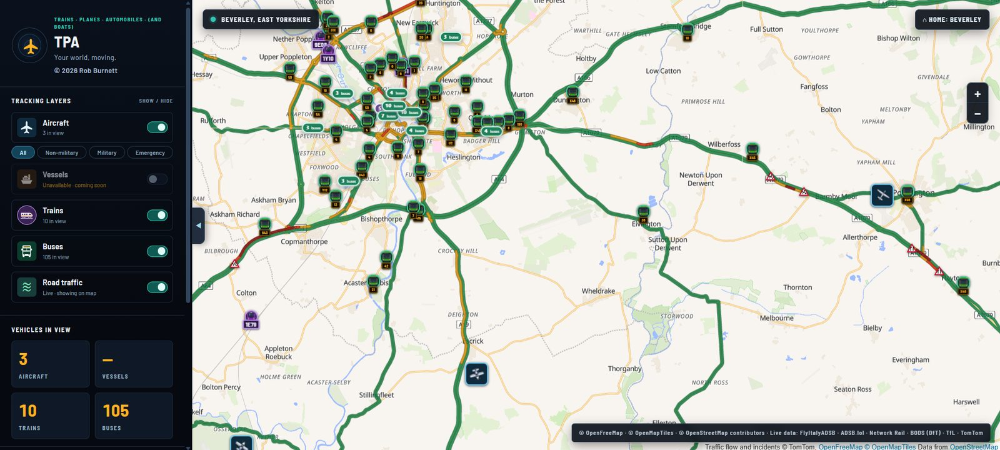
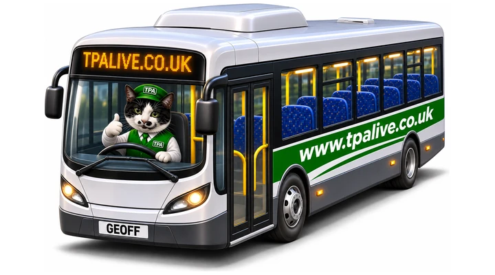
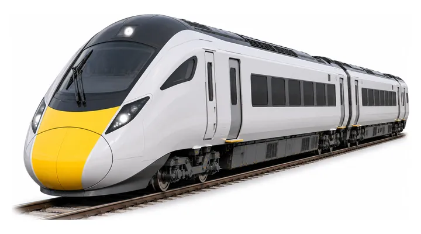
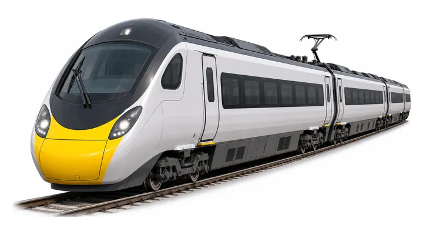
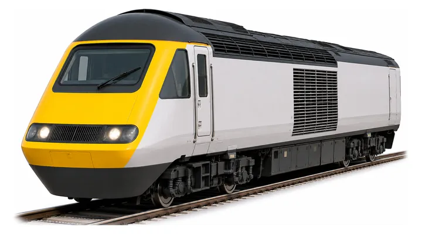
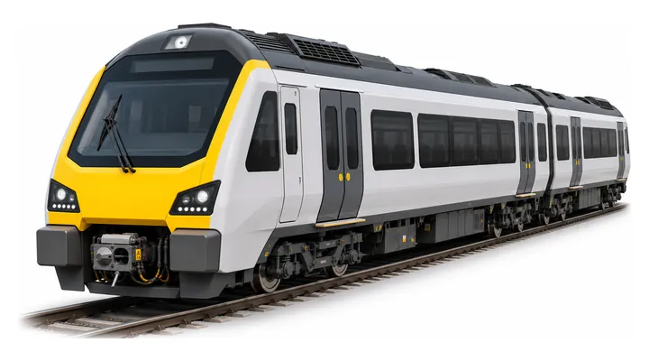
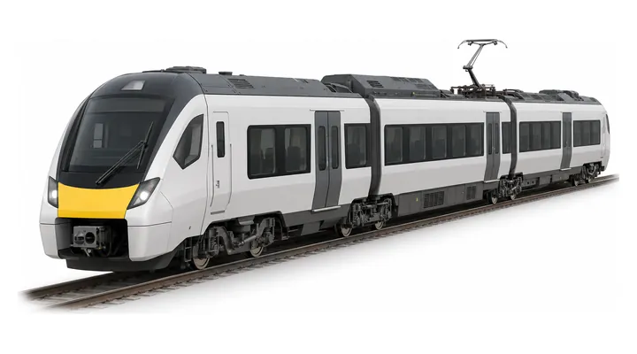
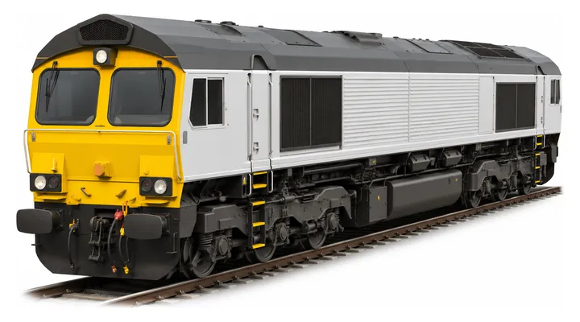
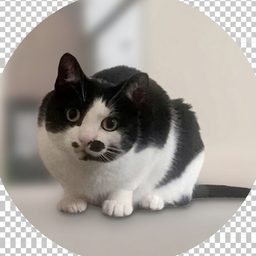

Buses
Buses following their real roads, with where they're heading and their next stop. Driven by Geoff, obviously.
Watch buses roll down your street, trains glide into their platforms and planes ease onto the runway, all at once and as near to real time as the data allows. It's nearly ready.

Taken from the test version over York. Map data © OpenStreetMap contributors, map style by OpenFreeMap, traffic flow © TomTom.
Tap a bus or a train to see where it's going, and a picture of what it is: TPA's own drawings, from a Pendolino to a Class 66 freight engine.







Buses following their real roads, with where they're heading and their next stop. Driven by Geoff, obviously.
Trains gliding along the real tracks, standing at their platforms, with the train type and how late they're running.
Aircraft over the UK, from airline and aircraft type to the moment they touch down.
Main roads coloured by how busy they are, refreshed every ten minutes.
Boats are on the list for later.
